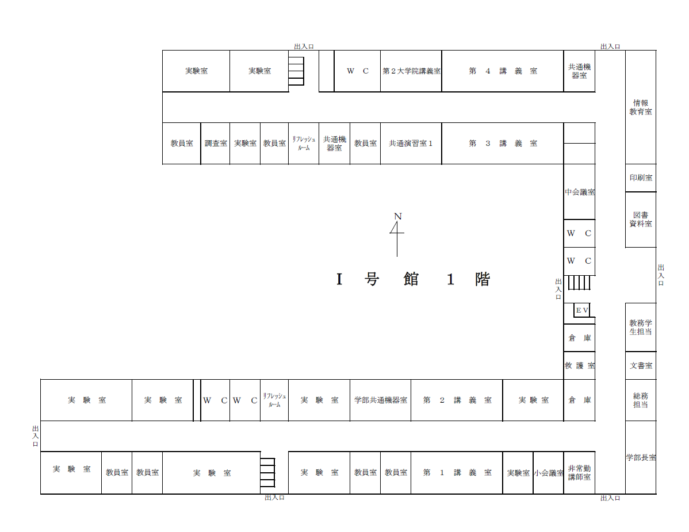
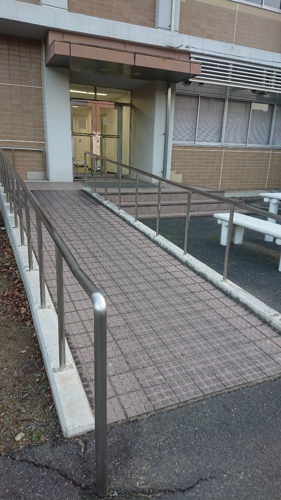
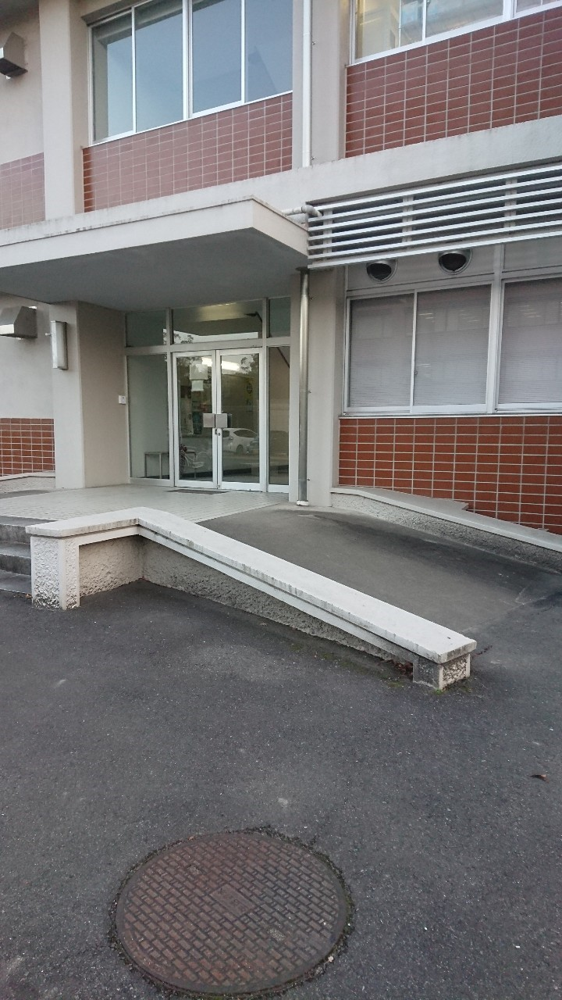
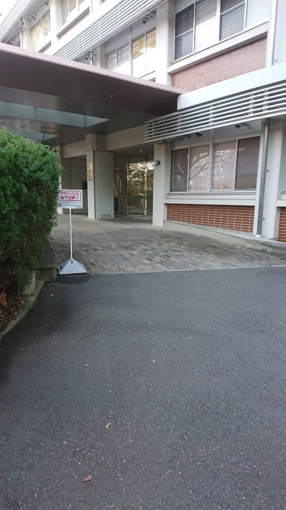
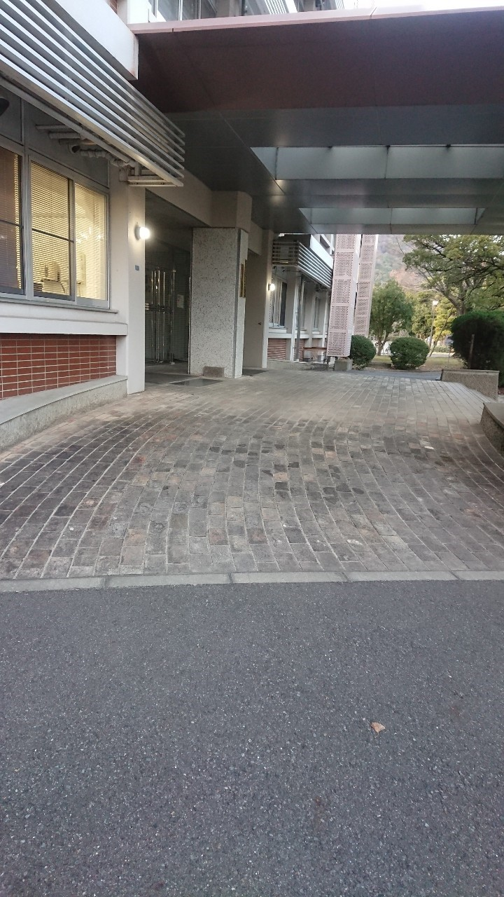
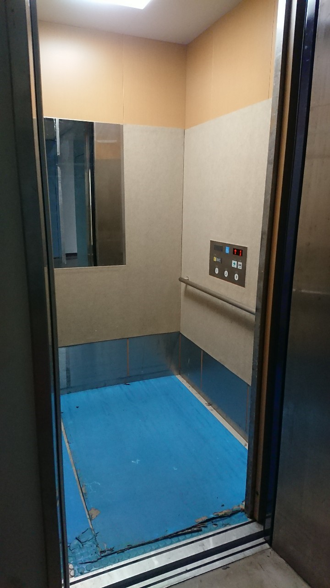
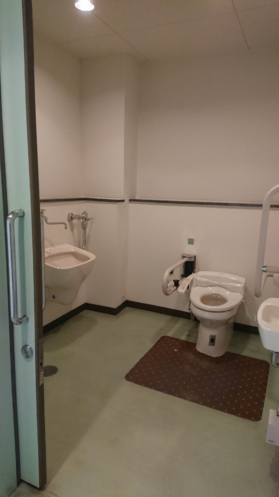
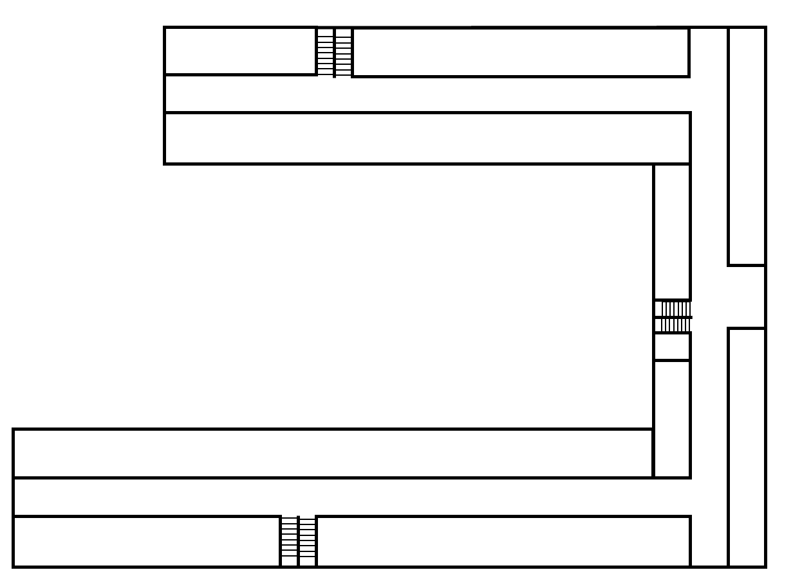

農学部
マップ上のアイコン(AEDを除く)をタップすると，その場所の写真をみることができます。
| アイコン | 説明 |
|---|---|
| AED | |
| エレベーター | |
| 多目的トイレ | |
| スロープ自動扉 | |
| スロープ手動扉 |
1F





エレベーター
多目的トイレ
1号館の北東入口(手動扉)
スロープの角度
| 上部 | 中部 | 下部 | 平均 |
|---|---|---|---|
| 3.8° | 4.2° | 4.5° | 4.2° |
1号館の北西入口(手動扉)
スロープの角度
| 上部 | 中部 | 下部 | 平均 |
|---|---|---|---|
| 8.3° | 7.8° | 8.8° | 8.3° |
1号館の正面入口北側(自動扉)
スロープの角度
| 上部 | 中部 | 下部 | 平均 |
|---|---|---|---|
| 3.6° | 4.7° | 4.4° | 4.2° |
1号館の正面入口南側(自動扉)
スロープの角度
| 上部 | 中部 | 下部 | 平均 |
|---|---|---|---|
| 4.5° | 3.7° | 3.9° | 4° |
2F
